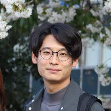

日時： 7月29日（水） 13:15-14:45
場所：総合研究７号館 情報3講義室（1階 104)
Long-range imaging (>0.5km) can be challenging due to the presence of atmospheric turbulence which causes optical distortion and blur. These effects are caused by changing meteorological conditions and the chaotic fluid motion of air which causes spatiotemporal changes in the refractive index of the media, resulting in the bending of light rays as they propagate.
In this talk, I will discuss the challenges of imaging and computer vision at long-ranges through atmospheric turbulence, and present physics-based computer vision, graphics and machine learning to estimate turbulent conditions, simulate turbulent images optically, and finally develop algorithms to mitigate the effects of turbulence for improved imaging and computer vision. I will conclude by outlining remaining challenges in the field and potential future avenues of research.
日時： 7月22日（水） 15:00-16:00
場所：総合研究７号館 セミナー室３（4階 435）
Abstract:
As an interdisciplinary field that integrates the theories and methods of acoustics, signal processing, machine learning and other disciplines, Computer Audition (CA) is playing an increasingly important role in the field of digital medicine, intelligent healthcare, and bioinformatics. Due to its inherited characteristics of non-invasive and ubiquitous, CA has the potential applications in assisted diagnosis and early therapy of not only physical but also mental diseases. This talk will report the state-of-the-art work and the future trends about computer audition for digital health.

日時： 7月17日（金） 13:15-14:45
場所：総合研究７号館 講義室1（1階 107）
Training today's largest AI models is as much a systems problem as an algorithms problem: the choice of optimizer, how work is split across thousands of accelerators, and how much data is spent per step all interact, and the most efficient designs come from treating the algorithm and the system together rather than separately. In this talk I argue that the geometry of stochastic optimization is a practical language for this algorithm–systems co-design: it tells us where an optimizer's useful signal actually lives, and therefore which approximations a system can safely make to run faster.
I begin with a motivating observation. Measuring the geometry of real training trajectories reveals a "no wrong turns" phenomenon: across architectures and optimizers, stochastic gradients stay consistently aligned with the direction to the eventual solution. This stability is what makes co-design safe — it bounds how far a system may deviate from exact computation without hurting convergence. A first payoff is on the communication side: a method we call PALSGD trades exact synchronization for cheap local corrections, cutting communication by over 90% while reaching target accuracy faster.
The heart of the talk is the compute side — how much data each optimization step should use. The classical "gradient noise scale" predicts a critical batch size from the ratio of gradient noise to signal, but it quietly assumes plain SGD and Euclidean distance, while the optimizers behind today's largest models, such as Adam and the recent Muon, do not measure distance that way. I show that the right batch size lives in the geometry of the optimizer itself: each optimizer is steepest descent under some norm, so its noise and signal must be measured with the matching, "dual" ruler — the Euclidean norm for SGD, the ℓ1 norm for sign-based methods, and the nuclear norm for spectral methods like Muon. Crucially, the signal is co-designed with the system: instead of expensive per-example gradients, it is estimated from the per-worker gradients already exchanged across GPUs, so it rides along with communication the training stack is doing anyway. On a 320M-parameter language model trained on billions of tokens, geometry-matched adaptive batch sizes match the best fixed-batch validation loss while cutting the number of optimizer steps by up to two-thirds.
I will close with the broader agenda this opens up: a research program on the principled co-design of optimization algorithms and the systems and hardware they run on — using geometry to decide what to compute exactly, what to approximate, and what to communicate — together with the open challenges that remain, from stateful optimizers to foundation-model scale.

日時： 4月16日（木） 12:10-13:10
場所：京都大学文学研究科 ぶんこも地下多目的スペース
The human visuomotor system is characterized by a remarkable degree of functional specialization- between pathways dedicated to perception and action and between hemispheres governing lateralized motor control. But how does this specialization develop, and what conditions does it require? Autism, a neurodevelopmental condition characterized by altered sensory, motor, and social processing, may offer a powerful window into these questions. In this talk, I present converging evidence from three lines of research examining visuomotor behavior in autistic and non-autistic adults. First, using a naturalistic LEGO-building task, we show that autistic individuals exhibit reduced hand lateralization and more idiosyncratic movement trajectories during free object manipulation, revealing that reduced specialization manifests spontaneously, without experimental provocation. Second, using controlled grasping paradigms with visual illusions and stimulus range manipulations, we demonstrate a reduced functional dissociation between perception and action in autism: contextual information that typically influences only perceptual judgments leaks into visuomotor computations, suggesting impaired specialization of the dorsal visual pathway. Third, using a novel dyadic action-prediction task, we show that this reduced specialization extends to the social visuomotor domain, with autistic individuals exhibiting slower, more variable motor responses regardless of their partner's diagnostic identity. Across all three studies, increased behavioral variability emerges as a consistent signature of reduced specialization. Together, these findings suggest that the visuomotor system is exquisitely sensitive to typical neural maturation and visual experience, and that autism disrupts the developmental trajectory through which specialization normally emerges. This line of research sheds light on the developmental conditions that shape functional specialization in the human visuomotor system.

日時： 4月8日（水） 13:15-14:45（Joint Talk 1/2）
場所：総合研究７号館 情報3講義室（1階 104)
Conventional cameras produce high resolution images using millions of pixels.
As a result, they make significantly more measurements than needed to solve lightweight vision tasks.
I will present the minimalist camera, which uses a small number of “freeform pixels” whose shapes are automatically designed to be most information rich for the task at hand. We show that a minimalist camera can be used to monitor an indoor space with 6 pixels, estimate traffic flow with 8 pixels, and compute robot odometry with 4 pixels.
Since a minimalist camera uses a very small number of measurements (freeform pixels), it preserves privacy and can be fully powered using just the light falling on it.
Next, I will present an “irradiance camera,” which, for any environmental illumination, measures the irradiance incident on every point on a sphere. We show that this irradiance function can be accurately estimated using just 49 detectors.
Since the number of measurements are small, we show that the camera can produce video of the irradiance function while being entirely self-powered.
We conclude with our plans to use the camera to compute egomotion, solve lightweight vision tasks, and estimate sky and weather conditions.

日時： 4月8日（水） 13:15-14:45（Joint Talk 2/2）
場所：総合研究７号館 情報3講義室（1階 104)
Our ability as humans to recognize materials is critical to every action we take.
Using vision alone, we can infer whether an object will be heavy or light, rough or smooth, and even rigid or soft -- each of which determines how we interact with the object. I will present an approach to material recognition that leverages a taxonomy of materials, which is arranged by shared mechanical properties.
Our recognition model explicitly wires hierarchical relationships between materials to achieve higher performance.
Due to the hierarchical nature of our approach, we can recognize materials and their properties at different levels of specificity depending on the context and confidence.
While appearance conveys class-level properties of a material, touch can reveal instance-level properties. In the second part of my talk, I will present how we enable tactile robotic systems to perceive materials in real time. We show that, through simple tactile signals, we can recover the mechanical properties of an object while grasping it and adjust the force we are using to grasp it.
This allows us to use the minimum force required to grasp and lift the object, thereby mitigating the risk of damage. We conclude by showing how our approach can be used to differentiate and sort objects, for example, arranging avocados by their level of ripeness.